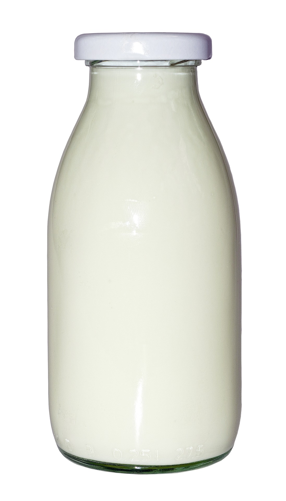

<!--
  Generated template for the LoginPage page.

  See http://ionicframework.com/docs/components/#navigation for more info on
  Ionic pages and navigation.
-->
<!-- <ion-header>

  <ion-navbar>
    <ion-title>Login</ion-title>
  </ion-navbar>

</ion-header> -->


<ion-content>
  <ion-content padding id="loginform">
    
    <!-- <ion-grid>
      <ion-row>
        <ion-col>
          <h2>  Login to</h2>
          <h1>Milk Man</h1>
        </ion-col>
      </ion-row>
    </ion-grid> -->
    <!--  -->
    <form [formGroup]="loginForm" class="login-form">
        <ion-item>
          <ion-icon name='custom-mail' item-end></ion-icon>
          <ion-input type="email" placeholder="Enter email" formControlName="userName"></ion-input>
        </ion-item>
      
        <!-- <ion-item>
          <ion-input type="inputType"  placeholder="Enter Password" formControlName="password"></ion-input>
          <ion-icon [name]="(inputType == 'password') ? 'eye' : 'eye-off'" item-left (click)="inputType = (inputType == 'password') ? 'text' : 'password';"> </ion-icon>
        </ion-item> -->
        <ion-item>
        <ion-input placeholder="Password" [type]="showPassword ? 'text' : 'password'" clearOnEdit="false" formControlName="password"></ion-input>
        <button (click)="onPasswordToggle()" ion-button clear small item-end icon-only>
          <ion-icon [name]="showPassword ? 'eye-off' : 'eye'"></ion-icon>
        </button>
      </ion-item>
      <button ion-button full round color="danger" (click)="login()">Log in</button> 
      <div class="create-account" (click)="gotoRegister()">Create Account</div>
    </form>
  </ion-content>
</ion-content>
